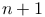
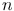

Lateral drift correction
ThunderSTORM supports lateral drift correction using the method of Mlodzianoski et al. [1]. Here, the list of localized molecules is split into  batches based on the frame in which they appeared. Each batch is used to render one super-resolution sub-image. The presumption of this method is that similar structures will appear in all reconstructed sub-images. Cross-correlation methods are used to determine the shift between the first sub-image and each of the subsequent sub-images. This leads to  cross-correlation images, where the shift in the position caused by the drift corresponds to the relative position between the global intensity maximum peaks. The localized peaks are assigned to the central frame of each batch sequence and the drift for intermediate frames is determined by local regression using third degree polynomials. The original molecular coordinates are corrected for the drift using the estimated values. The cross-correlation calculation can be limited to a region of interest, allowing users to use a fiducial marker for drift correction.
In our implementation, super-resolution images are rendered by the average shifted histograms method, cross-correlation images are computed by Fast Fourier Transform methods as implemented in ImageJ, and the location of global intensity maximum peaks is determined with sub-pixel precision using the radial symmetry method. The number of batches is user-defined as is the magnification of rendered super-resolution sub-images.
References
- [1] (2011) Sample drift correction in 3D fluorescence photoactivation localization microscopy, Optics Express 19 (16), pp. 15009–19. External Links: Document. Cited by: Lateral drift correction.
![[LOGO]]()